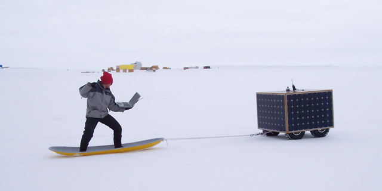

| |<< |< August 5, 2005 >| >>| | |
|
The day was a mixed bag, as many days since we got here have been. Trying to drain down the batteries a bit, we drove the robot around on the flat skiway turnaround using battery power. The robot was towing a sled, attached to which was a load cell. Using this setup, we wanted to gauge how much the robot could pull on that terrain with the these tires. As you saw on this website a few days back, the robot is quite capable of towing at least one person (me) on a sled. That was only the opening round for today. As we kept going, we added a second person, then a third. By the time the wheels finally started to lose traction and churn away the snow beneath, we were towing something like 450 lbs.! The other task for the day, as it has been for the previous day and a half, has been to get the solar power system past the first two panels we had working earlier this week. Each time we have tried, something has broken, necessitating several hours of painstaking diagnosis and repair. It would seem at this point that, as the power system crashed once again this afternoon, hardly before we even got started, that the root cause has still eluded us. Each time something has broken, I have come up with some theory or explanation why. Each time, I'm fairly sure that I've finally got it. Well, the current evidence suggests that I'm not quite there yet. But, I have a new theory... --Alex Streeter |
|
|  | |
| We should start selling tickets - the coolest ride on the whole island. Maybe not the fastest (ok, definitely not the fastest), but where else can you surf the snow with your own solar powered robot? | |
| |<< |< August 5, 2005 >| >>| |
| [Main] | [Mission] | [Design] | [Science] | [Papers] | [Pictures] | [Team] |
|
Last Updated on 10/20/2005 by Streeter
Site © Thayer School of Engineering, Dartmouth College, Hanover, N.H. |